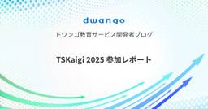

ドワンゴ教育サービス開発者ブログ
https://blog.nnn.dev/
ドワンゴ教育事業の開発者ブログ
フィード

TSKaigi 2025 参加レポート 4
4
ドワンゴ教育サービス開発者ブログ
バックエンドエンジニアの松尾です。 2025年5月23日-24日にTypeScriptをテーマとした技術カンファレンスTSKaigi 2025に参加しました。 本記事では弊社からの登壇内容やスポンサーブースの様子をお伝えします。 登壇レポート 弊社からは4名のエンジニアが登壇しました。 TypeScriptだけを書いてTauriでデスクトップアプリを作ろう speakerdeck.com 小松さんからはRust製のクロスプラットフォームであるTauriについて、 Tauriの特徴やTypeScriptでTauriを使うことの嬉しさや辛みを紹介しました。 筆者はTauriに関して無知のためRus…
2日前

複雑な教育サービスでのプロダクトマネジメント体制構築（立ち上げ編）
ドワンゴ教育サービス開発者ブログ
目次 目次 はじめに 私たちが向き合ってきた課題とここ4年の取り組み プロダクトマネジメント体制をどう設計したか 体制立ち上げ後、最初に取り組んでいること 体制の構築にあたって、大切にしていること これからやっていきたいこと おわりに We are hiring! はじめに こんにちは、ドワンゴ教育事業本部の吉原です。バックエンドエンジニアから企画開発エンジニアを経て、2022年から企画開発やデータ活用のセクションのマネージャーをしています。また、この2025年4月からはe-learningサービス全体を見渡して方向づけをしていくようなポジションも兼任しています。 ドワンゴ教育事業で運営してい…
9日前
Webフロントセクションのご紹介 2025
ドワンゴ教育サービス開発者ブログ
私たちWebフロントセクションのメンバーについてご紹介します。セクションメンバーの雰囲気やどんな働き方について、ご興味をお持ちの方は是非ご一読ください。
1ヶ月前
株式会社ドワンゴは TSKaigi 2025 にシルバースポンサーとして協賛します
ドワンゴ教育サービス開発者ブログ
株式会社ドワンゴは、2025/05/23 (金) - 24 (土) にて開催される日本最大級の TypeScript をテーマとした技術カンファレンス TSKaigi 2025 に、シルバースポンサーとして協賛いたします！ 当日は、教育事業本部所属のエンジニアがスポンサーブースにてご対応しますので、現地にお越しの方はぜひお気軽にお立ち寄りください 🙌 スポンサーブースでは、TypeScript や教育事業に関連するアンケートパネルを展示している他、限定ノベルティもご用意しております 🎁 株式会社ドワンゴの "教育事業" とは？ 私たちは、未来の「当たり前」の教育をつくるため、生徒・学生や教職員…
2ヶ月前
インターンと新卒2年目で話した、半年間のインターンで得た成長と、テレワークのインターンの良さと難しさの話
ドワンゴ教育サービス開発者ブログ
インターンを探している皆様、もしくはインターンを募集している皆様、こんにちは。Webフロントセクションのsokunoです。この記事では、教育事業本部のサービス開発部に長期インターンとして配属されているお二人の学生と「半年間ドワンゴでインターンをやってみてどうだったか」というテーマで対談しましたので、紹介いたします。インターンを探している方は雰囲気を掴むために、インターンを企画する方は運営のヒントに役立てていただけると嬉しいです。ライブ感が強めに仕上がっており、普段のこの開発者ブログの記事とは毛色が違うかもしれませんが、ぜひお付き合いください。 対談者紹介 Seiさん 福家さん sokuno 対…
3ヶ月前
OpenSearchで日本語全文検索をするためのドメイン知識を整理する
ドワンゴ教育サービス開発者ブログ
OpenSearch導入にあたって、サービスのドメインモデルについて調べたことをまとめました。
4ヶ月前
教育×開発×PMO 新しい組織づくりに挑戦する仲間を求む！
ドワンゴ教育サービス開発者ブログ
開発組織の拡大とともに、プロジェクトの増加に伴うマネジメントの課題が顕在化しています。 その解決策として、プロジェクトマネジメントの標準化やロードマップ管理の制度設計を担う部門PMO（プロジェクトマネジメントオフィス）を立ち上げます。 現在、最初のコアメンバーを募集しています！ 教育×開発×PMO 新しい組織づくりに挑戦する仲間を求む！ はじめに 私たちは、スマホやPCで多様な授業を受けられる学習システム「ZEN Study」をはじめ、日本最大級のオンライン高校「N高等学校・S高等学校」や、2025年4月に開学する「ZEN大学」など、ネットの時代に適した教育サービスを開発・運営しています。 急…
4ヶ月前
BigQueryでJSON文字列を攻略する関数たち
ドワンゴ教育サービス開発者ブログ
はじめに ドワンゴ教育事業でデータアナリストとして働いている小林です。 ドワンゴ教育事業におけるデータアナリストは企画開発組織の一員としてKPI可視化やレポーティングなどをメイン業務としています。個人的には新たなサービスが生まれる瞬間のお仕事が一番好きで、「何の指標をみていくのか」「どんなデータが流れてくるのか」など少し上流の工程からデータの取り扱いを検討するとともに、既存のダッシュボードをバージョンアップする良い機会にしたり、新たなステークホルダーに対して良いデータ分析の提供を考えたりと、楽しい日々が続きます。 私たちドワンゴ教育事業では大学開学やR高の開校など大きなサービスリリースが予定さ…
5ヶ月前
ZEN大学のWebシラバスを支える技術
ドワンゴ教育サービス開発者ブログ
本記事は ドワンゴ Advent Calendar 2024 の25日目の記事です🎄 はじめに こんにちは。Webフロントエンドチームの山口です。 この度、鋭意開発しておりました、ZEN大学のWebシラバスを公開しました（以降シラバスと表記）。 公開後、多くのポジティブなご反応を頂いており、大変嬉しい限りです。 さて、本記事ではシラバスの技術面に焦点を当て、全体のアーキテクチャとWebフロントエンドの技術構成についてご紹介します。ぜひお付き合いください。 はじめに シラバスについて アーキテクチャ 技術構成 Next.js（App Router） Panda CSS Radix UI（Prim…
6ヶ月前
N予備校からZEN Studyに変わる中でどうユーザー体験を変えようとしたのか〜企画目線での苦労話
ドワンゴ教育サービス開発者ブログ
こんにちは、ZEN Study 企画チームの井手です。 2024年8月28日に、ドワンゴが提供しているオンライン学習システム「N予備校」は「ZEN Study」に生まれ変わり、ホーム画面を中心に見た目も機能もリニューアルしました！ 私は今回そのホーム画面の企画をメインで担当させていただきました。 ここでは、企画・デザインの観点から、なぜ名称を変更したのか、どんなユーザー体験を目指したのか、そこに至るまでの苦労話などができればと思います。 ※フロントエンド開発の視点からの関連記事もあります。 名称変更の背景 N予備校は2016年の誕生時、高校生をメインターゲットにしていました。しかしその後、中高…
7ヶ月前
OpenAPI Spec を出力できる DSL、TypeSpec の実践例
ドワンゴ教育サービス開発者ブログ
この記事はドワンゴ Advent Calendar 2024の 1 日目の記事です。 はじめに こんにちは。ZEN IDの開発をしている、エンジニアのユーンです。 株式会社ドワンゴは先日2024年11月16日に開催された日本最大級のTypeScriptをテーマとした技術カンファレンス TSKaigi Kansai 2024 にプラチナスポンサーとして協賛いたしました。 ドワンゴのスポンサーブース 私は個人でセッション「型付き API リクエストを実現するいくつかの手法とその選択」を発表し、OpenAPI を中心とした手法を一例として紹介しました。 speakerdeck.com このセッション…
7ヶ月前
株式会社ドワンゴは TSKaigi Kansai 2024 にプラチナスポンサーとして協賛します
ドワンゴ教育サービス開発者ブログ
株式会社ドワンゴは2024年11月16日に開催される日本最大級のTypeScriptをテーマとした技術カンファレンス TSKaigi Kansai 2024 にプラチナスポンサーとして協賛いたします。 当日は弊社教育事業エンジニアが複数名参加します。スポンサーブースをいただいていますので、現地で参加される方は是非お気軽にお越しください。 スポンサーブースではZEN Study内にあるTypeScriptの教材を触れる他、限定ノベルティもご用意しております！ ドワンゴの教育事業とは？ 私たちは、未来の「当たり前」の教育をつくるため、生徒・学生や教職員の「学ぶ」「教える」体験の最大化を日々目指して…
8ヶ月前
ZEN Study 教材基盤開発エンジニアインターンシップ体験記
ドワンゴ教育サービス開発者ブログ
はじめに 初めまして！ 2024年8月1日から 2024年10月31日の3ヶ月間、教材基盤開発セクションでインターンシップに参加していた市島功大です。 参加前のスキルレベルは以下のような状態でした。 JavaScript を使ったバックエンド開発を主に行なっていた TypeScript はプリミティブな値・オブジェクトの型等の使いそうな型定義は分かるが、Omit や Partial 等の TypeScript 独自の型定義は分からない状態 NestJS は学習経験があるが、何かしらアプリを作成する等の開発経験はない状態 参加をおすすめしたい人 ドワンゴの教育事業に興味のある方 書いてきたのは …
8ヶ月前
主キーサイズの違いによるPostgreSQLの検索性能の違いを比較する
ドワンゴ教育サービス開発者ブログ
PostgreSQLのテーブルの主キーのデータサイズによって単体取得のSELECT速度がどのくらい変わるか、実際に計測して比較してみました
8ヶ月前
2024年度 ドワンゴ新卒研修のようす
ドワンゴ教育サービス開発者ブログ
こんにちは、2024年新卒のXeramiyaです。 本記事では4ヶ月間のドワンゴの新卒研修について、研修生の立場からお話しします。 レッツゴー！ 全体研修 入社直後の約2週間は、企画・デザイナー・エンジニア職合同での全体研修が行われました。 各事業部や会社の制度の紹介、社会人としての心構えなどを教わります。 また、ドワンゴグループ各社の新卒合同で行われるワークショップでは、数日に渡るグループワークでの実践を通じてビジネスの基礎を学ぶことができました。 アイデアを出し合い、互いに意見しながらプロジェクトを前へと進めた経験は、同期の人柄を知る近道になったと今では感じています。 全体研修は毎日出社で…
9ヶ月前
機械学習パイプラインLuigiのタスク同士の関係を良い感じに可視化する方法
ドワンゴ教育サービス開発者ブログ
はじめに ドワンゴ教育事業でデータサイエンティストとして働いている中井です。 この記事では、PythonのパイプラインパッケージであるLuigiで構築したパイプラインにおいて、それを構成するタスク間の依存関係・タスクのグループ間（task_namespace で分けられる）の依存関係を良い感じに出力する方法についてお話しします。想定する読者はある程度Luigiを使ったことのある方としています。 Luigiではタスク全体の依存関係を出力できますが、大規模なタスクだともう少し荒い粒度であったり、全体のうちの一部だけ見たいといったこともあると思います。この記事を読むことでそのような荒い粒度の可視化や…
9ヶ月前
エンジニアをプロダクトマネージャーたらしめたものは何か？
ドワンゴ教育サービス開発者ブログ
みなさま、お疲れ様です！企画開発エンジニア の高瀬 (@Guvalif) です。 "企画開発エンジニア" という職種はあまり耳馴染みがないかもしれませんが、一般的には TechPM：Technical Product Manager として知られるような役割となります。ところで、プロダクトマネージャーってどうやったらなれるのか (なりたいと思えるのか)、どんな人に向くのかって、あまり分からなくないですか？ 本記事では、エンジニア・バックグラウンドからプロダクトマネージャーに 未経験転職 をした自身の事例を紐解きながら、再現性のありそうなファクターを探っていきたいと思います 🔍 ◆ この記事の位…
10ヶ月前
「N予備校」を「ZEN Study」に変えてみた件 〜 サービス名称変更の経験
ドワンゴ教育サービス開発者ブログ
「N予備校」を「ZEN Study」に変えるプロジェクトのフロントエンド対応に関する記事です
10ヶ月前
N予備校 iOSアプリのViewState列挙体を使ったSwiftUIの状態管理
ドワンゴ教育サービス開発者ブログ
はじめに N予備校 iOSアプリ開発チームに所属しているcoffmarkです。 iOSチームではSwiftUIを使って開発を進めています。 SwiftUI導入までの経緯については、ブログ記事(N予備校iOSアプリへ SwiftUI を導入するまでの道のりについて)で説明しています。 SwiftUI導入を進めていく中で、導入後に改善した点がいくつかあります。 今回はその中でもViewState列挙体を使ったSwiftUIの状態管理についてお話しします。 前提 (プロジェクト構成・SwiftUI実装方針のおさらい) N予備校 iOSアプリチームでは以下のような構成でiOSアプリを開発しています。 …
1年前
iOSのアプリライブラリとTestFlight
ドワンゴ教育サービス開発者ブログ
こんにちは。N予備校 iOSチームです。 まず初めに、N予備校アプリのZEN Studyへのリニューアルが当初予定より遅れていることについて、心よりお詫び申し上げます。皆様のご期待に沿えるよう努めておりますので、今しばらくお待ちいただければ幸いです。 学習システム「ZEN Study」 App Store「 N予備校アプリ」 さて、近日中にN予備校アプリをZEN Studyとしてリリースする予定ですが、このアプリ名の変更に伴い、ユーザビリティ、特にアプリライブラリでの検索性について課題が浮上しました。ユーザーがアプリを探す際、アプリライブラリの検索機能を利用することもあるでしょう。しかし、アプ…
1年前
BigQuery縦持ちデータを動的に横持ちデータにする方法
ドワンゴ教育サービス開発者ブログ
はじめに ドワンゴ教育事業でデータアナリストとして働いている小林です。 一般的にデータアナリストはデータの収集・分析を通して組織の意思決定を支援する役割を期待されることが多く、ドワンゴ教育事業における私のミッションもKPI動向の可視化やダッシュボード / レポートの作成・提供を通してデータドリブンな組織に貢献するところにあります。 私たち教育事業には施策を実行する企画者やビジネス上の意思決定者だけでなく、サービスを活用して教育の現場に立っている方々、サービスに展開している教材を制作しているチームなど多様な方面からデータ収集・分析の需要があります。それだけにやりがいも大きく楽しい日々を過ごしてい…
1年前
N予備校の規約類を microCMS で管理して、運用を改善した取り組み
ドワンゴ教育サービス開発者ブログ
はじめに こんにちは。Webフロントエンドチームの山口です。 この記事では、N予備校の規約類を microCMS で管理して、運用を改善した取り組みについてご紹介します。早速ですが、前置きは抜きにして本題に入りたいと思います。ぜひお付き合いください！ 背景、前提 N予備校では、基本的な 利用規約 の他、定期的に開催されるキャンペーンの応募規約など、様々な規約を公開しています。 中野信子講座での著書プレゼント企画 受講者参加型お悩み相談企画 総数は年々少しずつ増加しており、記事の執筆時点で23件もの規約が存在します。これらは全てプロダクトのコードベースにハードコードされており、開発チームが社内の…
1年前
grpc-kotlinの実装をinterfaceの定義によってテンプレート化する
ドワンゴ教育サービス開発者ブログ
grpc-kotlin の実装で不便に感じた点を、独自のインターフェース定義による簡易的なフレームワークを作ることで改善しました。
1年前
Okta Customer Identity Cloud(旧 Auth0)のForms for ActionsがEAになったよ
ドワンゴ教育サービス開発者ブログ
はじめに こんにちは。ドワンゴ教育事業バックエンドエンジニアの金子です。 Okta Customer Identity Cloud(旧 Auth0。以下 Okta CIC)の新機能「Forms for Actions」(以下 Forms)がEarly Accessになりました。本番環境での使用も想定されているステージです。 教育事業での採用も見据えて、どんな機能なのか調べてみたので内容を紹介します。 Forms for Actionsとは Okta CICの認証フローをカスタマイズできる機能です。 ログイン成功時のActions1内でFormを呼び出し、ユーザーへ表示できます。 例えば下記のよ…
1年前
Zod を使って CSV からの入力データをバリデーションする
ドワンゴ教育サービス開発者ブログ
こんにちは、バックエンドエンジニアの日下です。 CSV から JSON へ変換するスクリプトを、TypeScript で実装する機会がありました。 今回は、CSV のデータのバリデーションに Zod を使った話をします。 スクリプトの目的 システム間のデータ連携が目的です。 連携元のシステムから CSV 出力されたデータを、連携先のシステムで利用する JSON へ変換します。 また、JSON への変換以外にも以下の要件があります。 CSV のデータをバリデーションする 連携先のシステムで利用できるデータであることを保証するために、バリデーションを実行します。 バリデーション失敗時に、日本語のエ…
1年前
TSKaigi 2024 参加レポート
ドワンゴ教育サービス開発者ブログ
バックエンドエンジニアの松尾です。 2024 年 5 月 11 日に開催された日本最大級の TypeScript をテーマとした技術カンファレンス TSKaigi 2024 に参加しました。 本記事では弊社からの登壇内容やスポンサーブースの様子をお伝えします。 登壇内容まとめ 弊社からは下記の LT で 2 名のエンジニアが登壇しました。 TypeScript で使いやすい OpenAPI の書き方 speakerdeck.com yukimochi さんからは OpenAPI の書き方について紹介しました。 変更に強く、ドメインモデルを正確に表現する書き方にすることで、TypeScript …
1年前
pnpm の node_modules を探検して理解しよう
ドワンゴ教育サービス開発者ブログ
はじめに こんにちは。ドワンゴ教育事業でエンジニアをしているユーンです。 N予備校アプリケーションやその他複数のプロジェクトで pnpm を採用しました。pnpm とは何か、npm とどう違うのかというのを node_modules の構造を追いながら理解しつつ、教育事業での採用した結果についてお話します。 pnpm とは pnpm とは、npm や yarn とレイヤーを同じくするパッケージマネージャであり、サードパーティのものです。 pnpm.io pnpm は他のツールと比較して高速でありディスク効率が良いと謳っています。 その pnpm の最大の特徴は、 node_modules の構…
1年前
株式会社ドワンゴは TSKaigi 2024 をスポンサーしています
ドワンゴ教育サービス開発者ブログ
株式会社ドワンゴは2024年5月11日に開催される日本最大級のTypeScriptをテーマとした技術カンファレンス TSKaigi 2024 にプラチナスポンサーとして協賛いたします。 TSKaigi 2024 当日は弊社教育事業エンジニアが複数名参加します。スポンサーブースをいただいていますので、現地で参加される方は是非お気軽にお越しください。 スポンサーブースではN予備校内にあるTypeScriptの教材を触れる他、限定ノベルティもご用意しております！ ドワンゴの教育事業とは？ 私たちは、未来の「当たり前」の教育をつくるため、生徒・学生や教職員の「学ぶ」「教える」体験の最大化を日々目指して…
1年前